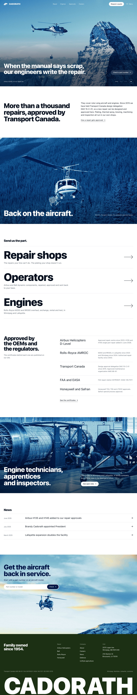
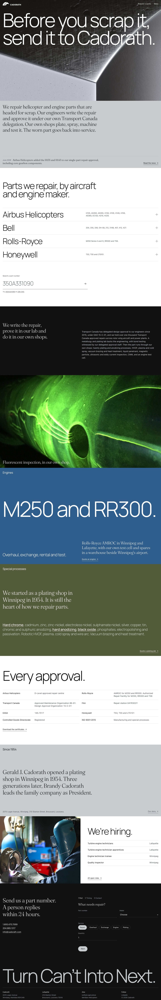

Cadorath
Homepage concepts, October 2026
Concept mockups, not a live Cadorath website.


Concept 1
The part
One real part, from worn to back in service.
Concept 2
Back in service
The aircraft at work, never the part.
Concept 3
Finish
One line, then the colours of real finishes.